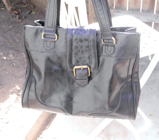
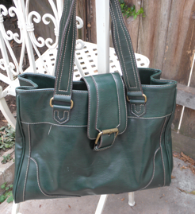
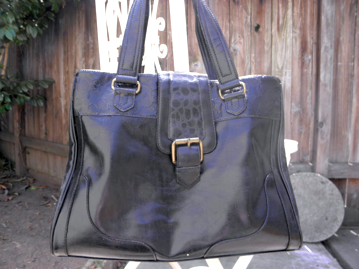
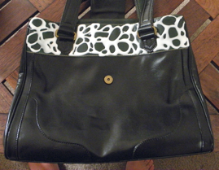
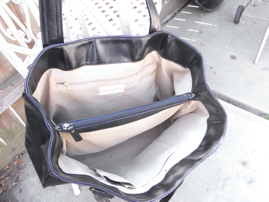
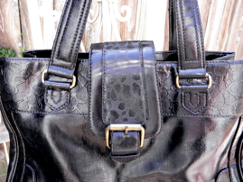
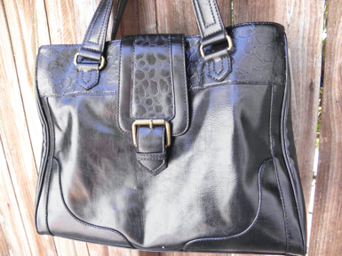

8-23-2012
Change Your Purse from Drab to Fab
When my husband and I helped a friend of ours move, she offered us some of the things she no longer wanted. Included in those things was this hideous, but huge, green purse. I thought - yeah, it's ugly, but I don't really have a purse that's big enough to carry my laptop and everything else. So I took the purse and decided that if I was ever going to use it I had to make some improvements. The result - a gorgeous, classic black purse with added texture. Here's how I did it!
Supplies:
- Old or Ugly Purse
- Acrylic Paint
- Paint Brush
- Elmer's Glue
- Damp Cloth
- Cup of Warm Soapy Water
- Q-Tips
Directions:
Take the damp cloth and wipe down the purse to clean off any dirt or dust. Using your acrylic paint and your paint brush, paint all the surfaces of the purse you do not want to add texture to. Take extra care when painting around cloth or hardware. If you get paint on the cloth or hardware take q-tip, dip it in the warm soapy water, and use the wet q-tip to rub off the unwanted paint.
Once the paint has dried to the touch, about 1 hour, use the Elmer's glue apply a small bead onto the unpainted sections of the bag in a pattern. Once you've finished you're pattern allow glue to fully dry, 2 - 3 hours. Once the glue has fully dried, paint the textured section of the purse with acrylic paint. Allow the paint to fully dry and set, about 48 hrs. You can now use your purse! Once the paint has fully set it becomes partially water resistant and you can use a wet cloth to clean your purse as needed.
Enjoy your new purse and don't forget to check out other upcycled crafts. Happy Crafting!
